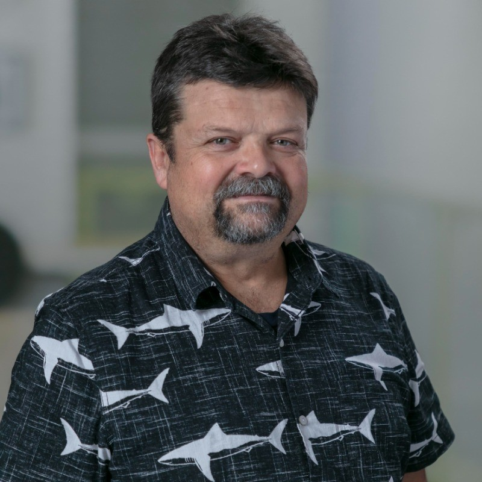

Alex Bunardzic
Business Velocity Architect
Vancouver, Canada · Working globally
Trusted by business and engineering leaders at:
"I had the pleasure of interacting with Alex recently. His deep experience, ability to take a truly holistic view, and still drive concrete execution is impressive.
A rare combination that makes conversations with him both insightful and actionable."

Esa Karjalainen, CEO Nikaxu Inc.
"I had the privilege of working directly with Alex for two years, during which he served as Software Engineering Practice Lead under my leadership as Director of DevOps at WorkSafeBC. During this time, Alex transformed our development practices in ways that benefited the delivery pods. He introduced and enforced Test-Driven Development across our engineering teams. Perhaps most impressively, Alex pioneered the use of Mountybank for API emulation, solving a critical challenge we faced in testing busy, production-like environments. His hands-on approach and deep technical expertise made him the go-to person when our teams needed innovative solutions to complex problems.
What sets Alex apart isn't just his technical prowess, but his unconventional thinking and willingness to challenge established norms—he's what I'd affectionately call an "unrepentant mutant slayer" when it comes to eliminating bad code and practices. As a speaker and thought leader within our organization, Alex consistently delivered insights that were simultaneously provocative and spot-on, pushing our teams to think beyond conventional wisdom. His strong opinions are always backed by solid reasoning and real-world experience, making him both a software visionary and a practical implementer. Any organization looking to elevate their engineering practices and culture would be fortunate to have someone with Alex's unique combination of technical depth, innovative thinking, and ability to drive meaningful change."
Andre Kaminski, Director - Advanced Technology Solution at WorkSafeBC

"I worked with Alex at Raymond James Ltd for about 7 years. Together we developed one of the strongest Compliance systems in the Financial Services industry. Alex was heavily involved in managing the team responsible for the programming. I always appreciated his ‘out of the box’ thinking and his ‘can do’ attitude. In retrospect, Alex was an extremely cooperative and insightful partner. He was successful in capturing my vision and solving countless problems to deliver programs that always exceeded my expectations."
Read full story →
"I’ve had the opportunity to connect with Alex both in person and through ongoing conversations online. What consistently stands out is his ability to combine depth of experience with a refreshing openness to new perspectives. He has a gift for making complex ideas feel accessible, while still challenging you to think more broadly.
Every interaction I’ve had has been thought-provoking and energizing. He is someone who doesn’t just talk about ideas, but brings them to life in a way that sparks meaningful dialogue and possibilities. I have no doubt that anyone collaborating with Alex would find his presence invaluable, both as a thinker who sees the big picture and as someone who helps others see new opportunities in their work."
"When Alex joined the dev team, I was an Ops architect. His approach fundamentally changed how I look at building and deploying enterprise software. It truly reshaped my career. This was DevOps before DevOps was a thing. What began as feeling like we were flouting convention quickly showed results. I still apply the practices and processes that Alex taught me in my daily work. I rarely meet people who can be deeply philosophical, yet ruthlessly pragmatic. I’d work with Alex anywhere he goes."
Read full story →
"I had the privilege of working with Alex Bunardzic almost 30 years ago when we were both software engineers at the same company. Alex was a software architect at the time, and he naturally became a mentor to me. He was passionate about best practices in Java and was one of the first people I met who was really pushing test-driven development, long before most had even heard of it. I learned a lot just by watching how he approached problems and how much care he put into writing clean, maintainable code.
Looking back, the fundamentals I picked up from Alex have stayed with me throughout my career and proved to be incredibly valuable as I moved into technical leadership roles. Things like test-first thinking, focusing on simplicity, and always questioning whether the solution will stand the test of time. His influence helped shape how I build and lead teams even today, and I’m still grateful for the time we worked together and the lessons I took away from it."
2-Week Velocity Briefing
In just 14 days, uncover where your teams gain or lose velocity — and walk away with a clear roadmap for safer, faster, more reliable delivery.
Your biggest competitor isn't another company. It's the drag in your system losing you the race against the market.
I work at the intersection of technology, product, and people to build the one capability that matters: the speed to win. I architect the systems that enable your business to learn, adapt, and ship at the speed of your best ideas.
This is for the leaders who feel the friction.
This is for the technology leaders (the CTO, VP of Engineering, Director of Product) who know their team is brilliant, but feel a growing friction between their ideas and their ability to execute.
You're not looking for another pair of hands or a niche specialist. You need a strategic partner to help you answer the real questions:
- "Why are we slowing down, and what are the hidden dependencies holding us back?"
- "How can we de-risk bold product bets and innovate safely in our most critical systems?"
- "How do we turn our technology organization from a cost center into the primary engine of our business strategy?"
If these questions keep you up at night, we're speaking the same language.
My Approach: From Trapped Potential to Strategic Momentum
Most consultants see technical debt as a liability to be managed. I see it as trapped potential.
Every line of legacy code is a decision frozen in time—it’s the fossilized evidence of a past business assumption. That old billing module encodes the assumption that you’d never sell subscriptions. That monolithic architecture assumes your product would only ever live on the web.
Taken together, this debt forms a map of your oldest constraints. My work is to use that map to find the precise points of leverage where challenging one old assumption can unlock a whole new trajectory for growth.
My role is to architect the system that unlocks that potential.
We don't just "refactor code." We install a new operating model for continuous evolution, using a framework I call Test-Driven Navigation (TDN). This isn't just a development technique; it's a management framework for making your technology a direct, responsive driver of your business strategy. It turns AI from a chaos-maker into a disciplined partner for growth.
The goal is simple: To build a resilient, adaptive organization where the best ideas can be shipped safely, quickly, and confidently.
Stop managing friction. Start architecting momentum.
I help you escape the costly cycle of technical debt and unlock new revenue streams. Let's transform your biggest frustrations into your greatest strengths. Let's schedule a 30-minute strategy call. In this confidential session, we will discuss the primary sources of drag in your organization and begin to outline a clear path toward building sustainable velocity.
Ready to accelerate your winning strategy? Let's talk.
The Strategic Problem
If you feel a growing gap between your strategic vision and your team's ability to execute, you are not alone.
Too often, our technology - the very engine meant to propel us forward - becomes an anchor. Years of past decisions, layered complexity, and hidden dependencies create a drag on the entire organization. The result isn't just slow release cycles or budget overruns; it's a loss of agility. It's the hesitation to make a bold pivot. It's the fear that a critical move will bring the whole system crashing down.
Your codebase isn't just a technical asset; it has become the central nervous system of your business strategy. When it's brittle and slow, so is the business.
The Vision of a New Capability
Now, imagine your organization with a new nervous system. One built for speed and resilience.
- Instead of reacting to the market, you pioneer its next move.
- Instead of debating the risk of a new feature, you have the confidence to launch, learn, and iterate in days, not months.
- Instead of seeing your technology as a constraint, you leverage it as your primary competitive advantage.
My Role as the Architect
As a Business Velocity Architect, I don't just fix technical problems. I help you redesign the engine.
My role is to partner with your leadership to install a new operating model - a disciplined, AI-augmented framework that transforms how your teams build and evolve your systems. We turn AI from a source of chaos into a precision tool for continuous evolution. We empower your developers to become true architects of your future.
We will transform your technology from a fossilized record of past assumptions into a dynamic, living system that drives your business forward.
Engagements Designed to Move the Needle
Your organization's challenges are unique. There are no one-size-fits-all solutions, only tailored strategies that address your specific context. The engagements below are not a fixed menu, but rather common starting points and examples of how we can partner to architect velocity in your organization.
Our work together will always begin with a deep-dive analysis to ensure the engagement is precisely designed to achieve your desired outcomes.
Packages are outcome-oriented and designed to pay for themselves through reduced cycle time, lower defect rates, and faster delivery.
Navigating the Opportunities
A short, intensive engagement to detect and analyze the sources of drag in your system. We go beyond the code to map the intersection of your technology, team dynamics, and product workflows. You come away with a clear, actionable roadmap for unlocking momentum and a C-suite-ready business case for change.
The Pilot Team Accelerator
We select a single, high-impact team to serve as a pilot for the new operating model. I work hands-on with them to implement Test-Driven Navigation (TDN), clear critical blockers, and transform their workflow. The goal is to create a lighthouse project — a resounding success story that demonstrates the new way of working and builds momentum for broader change.
The Leadership & Systems Overhaul
This is a longer-term partnership where I act as a catalyst for systemic change. We work together to redesign the core processes, upskill the technical leadership, and install the new operating model across multiple teams. This engagement focuses on building the internal capability and culture required to make business velocity a permanent, self-sustaining advantage.
The Strategic Advisor
A flexible advisory retainer that provides you and your leadership team with ongoing access for strategic guidance. Use this for navigating complex technical decisions, vetting new strategies, coaching high-potential leaders, or simply having a trusted, external expert to serve as a sounding board for your biggest challenges.
The Team Workshop Series
A customized series of intensive workshops designed to level-up your team's capabilities in specific, high-impact areas. This is not just training; it's a hands-on, collaborative session focused on solving one of your actual business problems using the principles of TDN and modern software architecture.
The Bespoke Engagement: Your Vision, Your Framework
Do none of the above perfectly match your needs? Excellent. The most impactful engagements are often the ones we design from first principles.
This path starts with a blank slate. We begin with a deep, collaborative discussion about your specific challenges, your desired outcomes, and the unique political and technical landscape of your organization. From there, we co-create a completely bespoke partnership designed to deliver the precise transformation you envision.
What Safe, Frequent Delivery Is Worth to Your Bottom Line
Estimate the value your delivery teams could unlock by shipping more often with low blast radius and AI-enabled guardrails.
ROI Summary
Quarterly (Baseline): —
Quarterly (With TDN): —
Delta Unlocked / Quarter: —
Annual (Baseline): —
Annual (With TDN): —
Delta Unlocked / Year: —
This model treats the team as the smallest unit of delivery — value grows by shipping small, safe, reversible changes frequently with AI guardrails that reduce risk and accelerate ROI.
Disclaimer: This calculator provides illustrative estimates only. Figures shown are hypothetical, for educational purposes, and should not be interpreted as guarantees, promises, or financial advice.
AI and The Future of Refactoring: Test‑Driven Navigation
Fresh from Devoxx Belgium, this talk shows how AI can pair with tests to steer refactors safely through legacy code. Ask about an in‑house version tailored to your stack.
Workshop outcomes
- Refactor confidently with executable tests as a compass
- Adopt mutation testing to harden your safety net
- Use AI to generate, explain & evolve tests
- Shorten cycle time and defect escape rate
About
I help leadership teams transform their technology from a source of friction into a driver of market speed and strategic advantage. I do this by implementing AI-augmented systems that enable your organization to learn, refactor, and evolve continuously.
I am an engineering leader and practitioner with decades of experience across fintech, healthcare, and enterprise platforms. I have led large engineering groups, modernized SDLCs with XP/TDD, and delivered at scale with Ruby on Rails, Node.js, and .NET ecosystems. I organized the first International TDD Conference and I write about software craftsmanship and pragmatic simplicity.
Testimonials

Maximiliano Contieri
Engineering Manager@Avature | CS Teacher@UBA | Book Author@O'Reilly | MaximilianoContieri.com Alex has demonstrated a deep knowledge of software engineering principles and the best practices ins software development. His presentations capture audiences with clear, insightful, and engaging content. He has a remarkable ability to break down complex concepts into understandable terms, making him an excellent mentor and speaker. Alex's expertise in Test-Driven Development (TDD) is unparalleled, consistently delivering robust and reliable code. Alex's humanist approach ensures that he not only excels technically but also pushes for collaborative and team work environment. His dedication to both the craft and the people he works with makes him an invaluable asset to any team. |
|
 Daniel Moka
Daniel Moka
Moka IT Engineering I am in contact with Alex for a while about pushing the boundaries of the software industry, and I have to admit that I have never met with such a skilled and professional software engineer as Alex! The level of the drive he represents about best software engineering practices is unprecedented! He puts great emphasis on producing quality software and on doing the best to make the customer happy. He has strong and solid background in agile methodologies such as Extreme Programming and Test Driven Development, and in building software in the best possible and agile way. I am convinced that Alex will provide significant value to the company he will work for and I sincerely hope to get the chance to be involved in projects together with Alex in the future. |
|
|

Willy-Peter Schaub
Encourage and enable everyone's creativity, passion, purpose, and strengths.
Alex was a pivotal part of our common engineering team, responsible to bring together people, processes, and products to enable software engineering to consistently deliver high-quality value to end-users with a focus on efficiency, security, and innovation. He was a consistent driving force in elevating software engineering practices and quality assurance, never hesitating to challenge conventional thinking when it stands in the way of progress. His commitment to empowering users, whether through embracing emerging technologies or solving complex challenges across people, processes, or products, has made a lasting impact. I have always admired his philosophy of “think outside, no box required,” which perfectly captures his boundaryless approach to innovation. Watching engineers initially flustered by his unconventional ideas, only to have their light bulbs switch on as they grasp the depth and clarity of his insights, has been one of the most rewarding experiences of working alongside him |
|
|
Chief Product Officer @ CoinPayments | Lean Six Sigma Green Belt Alex has an indispensable trait of confirming hypotheses before developing solutions to business problems. It has saved everyone a lot of wasted efforts when the first impulse is to treat symptoms of a problem instead of getting to the root cause. Under his careful guidance, work was noticeably more effective. |
|
|
Shopify | (prev) Tech founder Propel | Next Canada alumni | UBC Engineer Alex is an accomplished software architect, with a penchant for breaking large problems into simple solutions. He is kind, funny, honest, and a great teacher of foundational software engineering skills. I recall from working beside his desk, that the projects he led (TDD style, with full test suites) were of similar complexity and size to others at our Staples dev shop, but were managed flawlessly by his experienced hand and with much smaller teams. If you're in need of an effective software architect who loves to get in the weeds and help those around him, then Alex should be at the top of your list. |
|
|
Integration Architect Knowing Alex for number of years and enjoying and benefiting from discussions on various theoretical and practical problems, did not prevent me to be amazed during our work together with his technical and theoretical expertise in all related fields in our work. Moreover, Alex has another wonderful ability of presenting and transferring knowledge to others, making our collaboration in the team true success. |
|
|
Certified Treasury Professional (CTP). DeFi, Web3, Blockchain When I worked with Alex on the same team, Alex led the effort on improving the team's development methodologies and did an amazing job. Alex introduced TDD to the team and set up structures to how the young team performed software engineering tasks. Alex's effort resulted in significant improvement in delivery time and quality, literally eliminated bugs in our product while meeting all requirements and deadlines. I would highly recommend Alex to any software team that is looking to optimize its practice. |
Free Field Guide: Test Driven Navigation (TDN)
A concise, 10-page PDF covering Test Driven Navigation and AI pairing patterns. Perfect for business and engineering leaders who need results in 90 days.
What You'll Learn:
- Implement Test Driven Navigation in your projects
- Leverage AI pairing patterns for better results
- Deliver measurable outcomes in 90 days
- Optimize workflows for business and engineering teams
- Apply practical examples and case studies